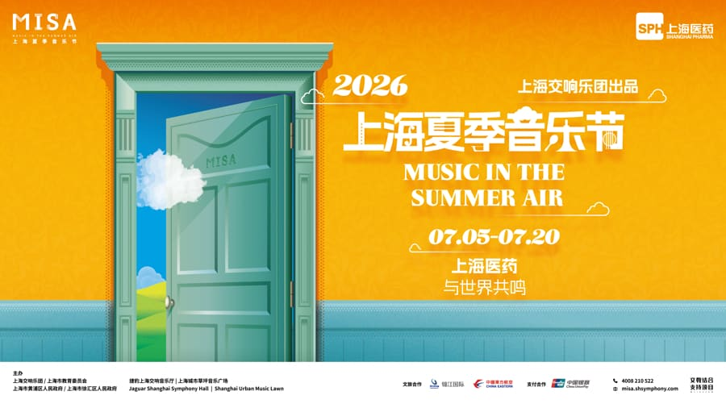

festival watch / Watch
2026 Shanghai Summer Music Festival (MISA)
Shanghai city culture and official travel sources list the 2026 MISA season from Jul 5 to Jul 20 with 33 live performances plus online MISA. Keep as Watch: source confidence is now stronger, but the fit is culture-night/listening-first rather than rave, and ticket availability still belongs to individual program pages.

KindFestival / multi-event lead
Date window2026-07-05 to 2026-07-20
Program timeMultiple programs
Venue / areaShanghai Symphony Hall / citywide venues
Formatmulti-day city culture festival
Program status33 live performances plus online MISA; Colin's Column carries a detailed program schedule
Ticketingfirst-round ticket sales announced; program-level checkout availability still needs checking
Source layerwatchlist
Event Tags
Simple tags for sound, room context, ticket/source status, and details that still need a source check.
How We Recommend This
- RecommendationKept on Watch because the sound and room fit points toward social house, disco, or date-route electronic music at Shanghai Symphony Hall / citywide venues; wait for firmer practical details before treating it as a pick.
- Best forBest for hard-techno, industrial, acid, or late-room listeners.
- Verify before goingConfirm the latest event page, ticket availability, lineup, start time, and venue address before making plans.
- Source confidenceWatch-level confidence from Shanghai Municipal Administration of Culture and Tourism; keep visible but verify with direct venue, promoter, ticketing, RA, or official artist evidence.
Festival Program
Date statusconfirmed by city culture announcement and Meet in Shanghai official travel article
Acquisition useShanghai summer music SEO and culture-night funnel
- Classical crossover seasonOfficial city culture source describes a 33-performance season spanning classical crossover, jazz, film music, dance, theatre, and contemporary art.
- International program signalMeet in Shanghai names Randy Brecker, Imani Winds, Tenebrae, and Aurora among the international artists and ensembles.
- Detailed opening programColin's Column lists the Jul 5 opening concert and subsequent program schedule at Jaguar Shanghai Symphony Hall.
Source Trail
- Shanghai Municipal Administration of Culture and Tourism watchlist / checked 2026-06-15 2026-06-14 page check confirmed Jul 5-20, 33 live performances plus online MISA, Jun 3 13:00 first-round ticket sale, and Shanghai Symphony Orchestra as organizer.
- Meet in Shanghai / official travel site official-context / checked 2026-06-14 2026-06-14 page check confirmed the 17th MISA edition, 33 performances in 16 days, Jul 5 opening, Jul 20 closing, and ticket guidance via Shanghai Symphony Orchestra.
- Colin's Column / MISA program detail program-detail / checked 2026-06-14 2026-06-14 page check provided detailed 2026 MISA program rows from the Jul 5 opening concert through mid-July performances.
This festival lead is intentionally noindexed until exact dates, tickets, lineup, or a direct official source confirms the details.
Trust Ledger
- Last checked2026-06-15
- Selection basisWatchlist lead kept visible for source monitoring; do not treat date, lineup, or ticketing as final until stronger evidence lands.
- Commercial relationshipNo paid placement recorded.
- Correction routeSend source fixes through RED 980793145 or the corrections policy.
- PolicyHow We Recommend / Corrections